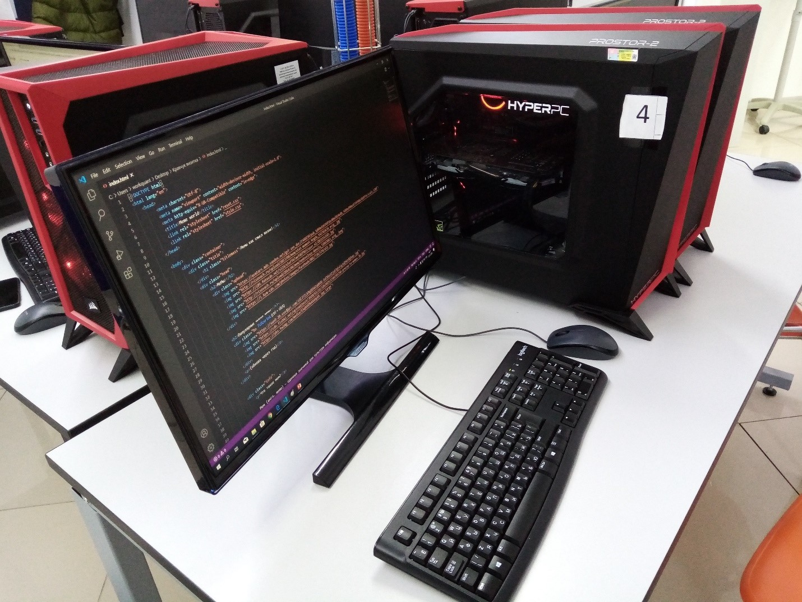

Наш сайт
Меркурий – самая жаркая планета Солнечной системы
Вы, наверное, думали, что раз уж Меркурий ближе остальных планет к Солнцу,
то там наверняка жарче всего. Однако такое мнение – очередное заблуждение.
Благодаря атмосферным условиям вторая планета Солнечной системы, Венера,
может похвастать средней температурой в 480 °C, в то время как на Меркурии
этот показатель находится в районе 167 °C.

Черные дыры – это воронки
В кино и мультфильмах черные дыры обычно изображают в виде огромных воронок,
засасывающих все вокруг себя. В реальности черные дыры больше похожи на гигантские
сферы. По сути это скорее невероятно плотные звезды с мощнейшей гравитацией.
Космос холодный
Не совсем. Измерить температуру космоса не так уж и легко. Наверное, потому что измерять просто нечего.
Высокие температуры обычно значат, что атомы субстанции находятся в возбужденном состоянии. Однако
космический вакуум явно не отличается подвижностью атомов. Правильнее было бы сказать, что в космосе
нет никакой температуры.
Мы не можем летать слишком быстро, потому что современные двигатели недостаточно мощные
В космосе нет практически никакого сопротивления, так что даже самый скромный двигатель
может разогнать огромный корабль до невероятных скоростей. НАСА сейчас как раз экспериментирует
над ионными двигателями малой тяги. Однако главная проблема заключается в запасах топлива.
Чтобы длительное время разгонять столь крупный объект, двигателю необходим серьезный источник питания.
Когда космолет все же достигнет своей максимальной скорости, его двигатель можно будет отключить, ведь
теперь судно достигнет другого конца Вселенной без каких-либо проблем. Другое дело, что когда-то вам
захочется и остановить корабль, а для этого нужна будет уже обратная тяга. На остановку судна пригодится
столько же топлива, сколько и на разгон, так что ученым есть еще над чем поломать свои светлые умы.
Земля вращается вокруг Солнца
А вот и самая невероятная ложь! Теперь вам будет, чем щегольнуть перед друзьями в праздной беседе,
и удивить всех не на шутку. Каждый объект воздействует на любое другое тело, и это значит, что не
только гравитация Солнца влияет на Землю, но и гравитация нашей планеты влияет на движение Солнца.
Технически оба этих небесных тела вращаются вокруг так называемого барицентра. В случае Земли эта
условная точка так близка к центру Солнца, что ее стали попросту игнорировать. Однако в случае Юпитера
барицентр находится в 48 280 километрах от поверхности Солнца. В каком-то смысле все мы вращаемся
вокруг друг друга…
Самый опасный объект во вселенной – это черная дыра
Вы, наверное, думаете, что самые опасные объекты во вселенной – это черные дыры, но вы ошибаетесь.
На самом деле это компактные, невероятно яркие и все еще скрывающие огромное количество секретов
объекты. Квазары! Крайне сложно понять, c чем именно мы имеем дело из-за его необычной природы.
Квазары представляют собой аккреционный диск (газовый диск) вокруг чёрной дыры. Чёрная дыра засасывает
окружающее вещество, при этом разгоняя его почти до световых скоростей (93% от скорости света).
Важно понимать, что это одни из ярчайших источников во Вселенной, превосходящие по яркости вспышки
сверхновых. Они настолько яркие, что затмевают свечение звезд целой галактики или даже нескольких.
Для сравнения, средний квазар создает в 10 триллионов раз больше энергии в секунду, чем солнечные
показатели. Однако это не предел! B 2019 году удалось обнаружить квазар J04З947.08+16З415.7,
удаленный от нас на 12.8 млрд. световых лет. Он считается самым ярким квазаром на сегодняшний
день c показателем яркости в 600 триллионов солнечных!

В открытом космосе вы замерзнете до смерти
Как мы уже убедились, с температурой в космосе не все так просто.
Более того, если человек внезапно окажется в открытом космосе и без скафандра,
он скорее перегреется. Почему? Потому что тепло, производимое нашим телом, будет
лишено возможности покинуть организм. На Земле мы с легкостью охлаждаемся - потеем,
обмениваемся температурами с окружающей средой и так далее. В космосе же такие способы
уже не сработают, ведь обмениваться там попросту не с чем.
НАСА потратило миллионы долларов на разработку ручки, которая бы писала в космосе
Этот миф часто рассказывают, когда вспоминают про космическую гонку 60-х годов, разгоревшуюся
между агентствами США и СССР. Народ посмеивался, что НАСА потратило миллионы долларов на разработку
шариковой ручки, которая писала бы в условиях относительной невесомости, в то время как советские
космонавты проявили знаменитую русскую смекалку и взяли с собой обычные карандаши. Однако правда
заключается в том, что оба государства использовали сначала карандаши и фломастеры, а потом перешли
на специальную ручку, но ее разработка не стоила никому никаких миллионов долларов. Письменная
принадлежность для космонавтов была создана по собственной инициативе частной компании Fisher
Pen Company, которая потом стала продавать свои ручки по 6 долларов за штуку.
Первой в космос полетела собака Лайка
Кто первым полетел в космос? Конечно, Юрий Гагарин. А из братьев наших меньших?
Собака по имени Лайка, это всем известно. Она была обычной дворнягой из приюта,
отправившейся первой покорять космос. Но в космосе бывали живые существа и до неё.
В феврале 1947 года американцы с помощью трофейной немецкой ракеты «Фау 2» отправили
в суборбитальный полёт несколько плодовых мушек (дрозофил), чтобы изучить на них
воздействие космической радиации. Они долетели до высоты в 109 км, а границей
космоса считается отметка в 80 км. Так что первыми путешественниками отправленными в космос были мухи.
Солнце жёлтое
Если вы попросите кого нибудь нарисовать наше светило, то начинающий художник непременно
возьмёт жёлтый карандаш. Взгляните на Солнце, и убедитесь, что оно имеет такой оттенок.
Что на самом деле? Желтоватым Солнце делает наша атмосфера. И если взглянуть на снимки из космоса,
становится понятно, что его цвет — белый. Но мы так привыкли считать Солнце жёлтым, что даже учёные
классифицируют похожие на него звёзды как «жёлтые карлики» просто для удобства.
Планета (Х) Нибиру
В 1972 году астрономы Калифорнийского университета (США) обнаружили, что некая неизвестная планета вызывает
гравитационное возмущение орбиты кометы Галлея. Их расчеты показали, что она в пять раз массивнее Земли
и имеет орбиту в три раза дальше от Солнца, чем планета Нептун. Позднее, в 1981 году, данные, полученные
с космических кораблей «Пионер-10», «Пионер-11», «Вояджер», подтвердили существование новой, десятой в
Солнечной системе планеты в 2,5 млрд км за Плутоном, с орбитальным периодом не менее 1000 лет
(по уточненным данным – 3600 лет). Ученые NASA, якобы, вычислили эту планету, официально подтвердив
существование таинственного небесного тела с очень сильной гравитацией, находящегося на значительном
удалении от Солнечной системы, по размерам сопоставимого с Юпитером. Впоследствии она получила
название «Нибиру».
Довольно близкое от Земли прохождение большой планеты может очень сильно повлиять на поведение
океанов и на сейсмическую активность Земли, что приведет к извержениям вулканов и землетрясениям,
а также к многочисленным гигантским цунами по всей планете с непредсказуемыми последствиями. В
течение короткого времени из-за массивного выброса вулканического пепла в атмосферу сформируется
эффект «ядерной зимы» с остыванием Земли и падением температуры до низких значений
продолжительностью 20–30 лет. Кроме того, за счет воздействия гравитации планеты Нибиру
на Землю возможна смена полюсов Земли и сдвиг ее с орбиты. Чем это чревато, описано выше.
Между тем есть и другие опубликованные в научных источниках мнения, и они кажутся нам более
правдоподобными. Суть их сводится к тому, что существование мифической планеты Нибиру до
настоящего времени серьезными и достоверными астрономическими исследованиями фактически не
подкреплено. А заявления о планете, которая находится уже где-то «поблизости», но «невидима»,
являются абсолютной чушью.
Космонавты едят только из тюбиков?
Находясь в космосе, все едят исключительно еду из тюбиков, а именно пюре. Космонавты
опровергают это, отметив, что в их рацион входит не только пюре, а самые разные блюда:
борщ, суп-харчо, грибы и так далее. Вторые блюда при этом сублимируют и превращают в
брикеты, которые по размеру немногим больше спичечного коробка, после чего укладывают
в полиэтилен. Таким образом, если влить туда кипяток и подождать несколько минут, можно
получить вкусное горячее блюдо.
"Первые блюда мы, как дети, посасываем через трубочку. Вторые едим ложками, если что-то улетит,
всегда можно поймать".
Стоит отметить, что космическое питание очень разнообразно -
в течение двух недель блюда не повторяются
Смерть в космосе
Миф о том, как изображают смерть человека в космосе. В «Миссии на Марс» герой моментально замерзает.
В фильме «Чужая земля» люди взрываются, а в ленте «Вспомнить все» глаза героев выскакивают из орбит.
В реальности примерно 10 секунд человек будет в сознании. Потом постепенно будет умирать мозг,
испытывая кислородное голодание. Кстати, именно так и показал смерть Стэнли Кубрик в «Космической
одиссее». Так что, смотря кино, не забывайте, это всего лишь великая иллюзия
Великая китайская стена–единственный рукотворный объект,видимый из космоса и Луны.
Существуют разные вариации этого высказывания, но все они одинаково ложные. Космонавты могут увидеть
с низкой орбиты множество объектов, созданных человеком. Например, египетские пирамиды или даже
взлетно-посадочные полосы крупных аэропортов. На самом деле увидеть Великую китайскую стену, не
зная точно, где она находится, гораздо сложнее, чем многие другие объекты. А уж увидеть стену с
Луны точно невозможно.
Жёсткие диски со временем начинают работать медленнее.
На самом деле, они ломаются одномоментно. Причиной его поломки может быть повреждение, полученное,
например, в результате падения ноутбука.
Если винчестеры начинают реагировать на команды медленнее, чем раньше, то проблема не в их возрасте,
а в плоскости операционной системы. По словам Антона Куканова, руководителя Центра цифровой экспертизы
Роскачества, для предотвращения замедления работы жёсткого диска необходимо бережно обращаться с ноутбуком,
не перегревать его и не ронять. Также при выборе устройства следует выбирать более современные SSD-накопители,
поскольку они быстрее, не шумят и игнорируют внешние негативные факторы.
Большое количество файлов замедляет работу компьютера.
На современных дисках и в многопоточных операционных системах содержание большого количества файлов никак не влияет
на быстродействие устройства. Исключением является ситуация, когда диск, на котором стоит операционная система,
заполнен на 90%. В этом случае ей может не хватать пространства для работы, что замедляет работу ноутбука,
поэтому необходимо оставлять свободными 15-30% диска. Также следует закрывать все файлы и процессы, которые
не используются.
Процессоры со временем начинают работать медленнее.
Мнение об изнашивании процессоров аналогично мифу о жёстком диске. Они могут
начать тормозить только из-за физических проблем, к примеру при повреждении ноутбука.
В этом случае помогут ремонт или замена процессора.
Компании выпускают обновления, которые «ломают технику», чтобы пользователи покупали новую.
Этот миф появился после инцидента с Apple в конце 2017 года, когда корпорация заявила, что через обновления
ухудшает производительность старых iPhone. Действительно, после обновления операционной системы часто
что-то выходит из строя или начинает работать медленно. Это происходит по разным причинам: от временного
сбоя, который впоследствии устранят, до более сложного варианта, когда ноутбуку не хватает мощности с
современными программами.
Для диагностики нужно нажать комбинацию клавиш Ctrl, Alt и Del, затем откроется диспетчер задач,
где можно посмотреть, насколько загружены процессор, память и диск. Если проблема заключается в
недостаточной производительности «железа», то ноутбук необходимо менять или модифицировать.
